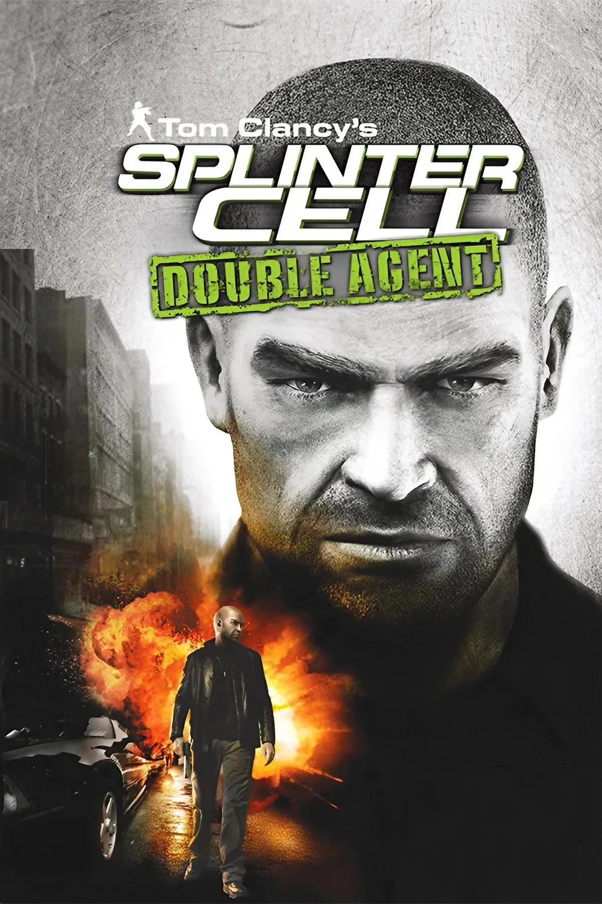
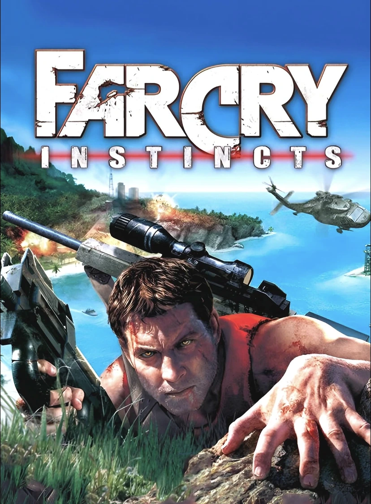
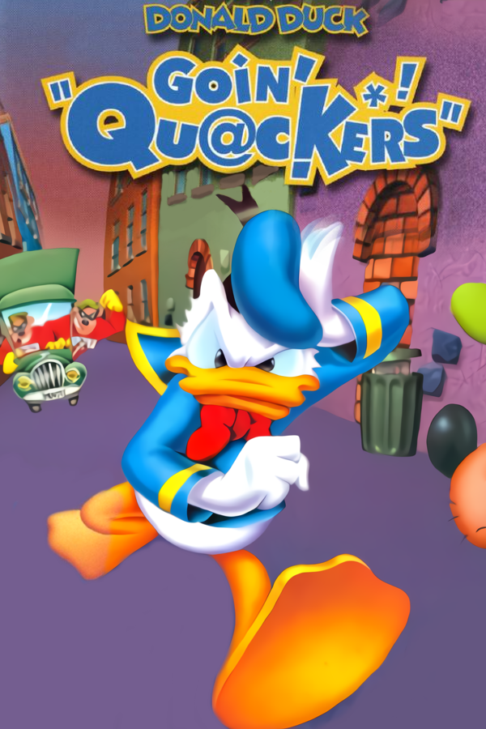
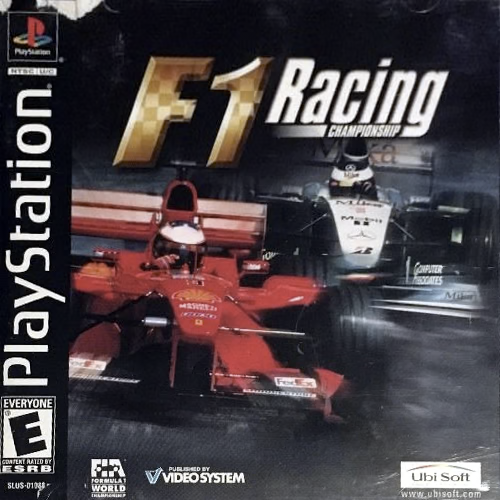
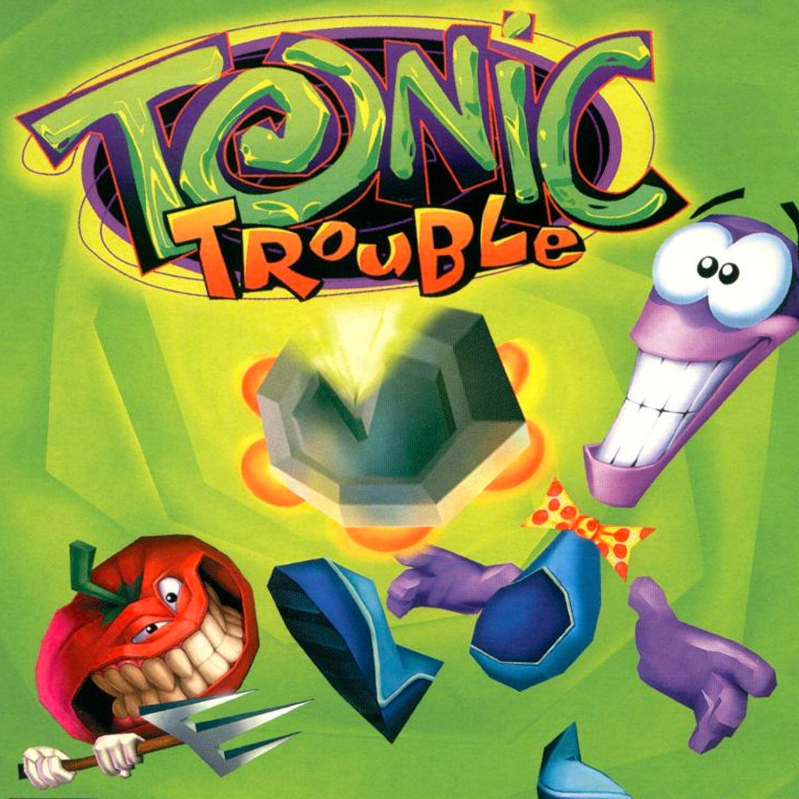

Welcome to my
Game development portfolio.
I'm a game designer and storyteller with over 25 years of experience bringing worlds to life through level design, missions, quests, cinematics, and narrative.
From AAA productions to smaller, more experimental projects, I love creating experiences where gameplay and storytelling work hand in hand.
Featured work


BioShock 2 / Minerva's Den2010
Level design · Cinematic scripting


Weird West2022
Quest design · Writing · Encounter Scripting
Additional credits

Immortals of Aveum
Level and Mission Design · 2023

Star Wars: Squadrons
Mission Design · 2020

Star Wars Battlefront II
Mission Design and Scripted Events · 2017

Star Wars: Uprising
Level Design · 2015

The Bureau: XCOM Declassified
Level and Mission Design · 2013

Splinter Cell: Double Agent
Level Design and Cinematics · 2006

Far Cry Instincts
Level art and level design · 2005
Early career credits

Donald Duck: Goin’ Quackers
Art · GameCube port · 2002

Open Season
Cinematic work · 2006

Tarzan Untamed
Art · 2001

F1 Racing Championship
Art · 2000

Tonic Trouble
Art · 1999
A little background
Designer by trade,
storyteller at heart.
Growing up as a lifelong gamer in Montreal, Quebec, a career in video games seemed more like a distant dream than a realistic possibility. That changed when I learned that a French company called Ubisoft was planning to open a studio in the city.
At the time, formal training in digital art was remarkably limited. I'd gone as far as I could at the Université du Québec à Montréal, where the available curriculum included a grand total of one introductory Photoshop class! So I took a leap, left university, and enrolled in an intensive year-long program in 2D art, 3D modeling, and animation at ICARI, a private institute in downtown Montreal.
It turned out to be one of the best decisions I've ever made.
In March 1998, I joined Ubisoft's brand-new Montreal studio as a 3D modeler, launching a career that would take me across studios, disciplines, and eventually borders.
After several years as an artist, I transitioned into game design in 2004. Since then, I've worked on everything from level and mission design to quests, scripted sequences, cinematics, and narrative design. Along the way, I've spent nearly nine years working in Northern California, with the rest of my career based in Montreal. More recently, I've been collaborating remotely with US-based studios.
Storytelling has always been another passion of mine. During my years in California, I completed UCLA Extension's Feature Film Writing program with honors. My short screenplay Trunk (read it here) won first place in an online screenwriting competition and placed among the top three in several others.
I eventually had the opportunity to bring those writing skills directly into game development on Weird West, contributing to quests, dialogue, and narrative encounters. It's an experience I'd love to build upon.
I've always been drawn to games where storytelling and gameplay aren't separate disciplines, but two parts of the same experience. Finding ways to make narrative, environments, and player interaction reinforce one another is what continues to excite me about game development.
Open to new opportunities
Available for full-time, contract, and freelance opportunities in level design, mission and quest design, narrative design, and game writing, including remote roles open to Canada-based applicants. I also offer consulting services to help teams strengthen their levels, refine their missions, and create more cohesive player experiences.
I look forward to the opportunity to collaborate with you and help make your next project a success.